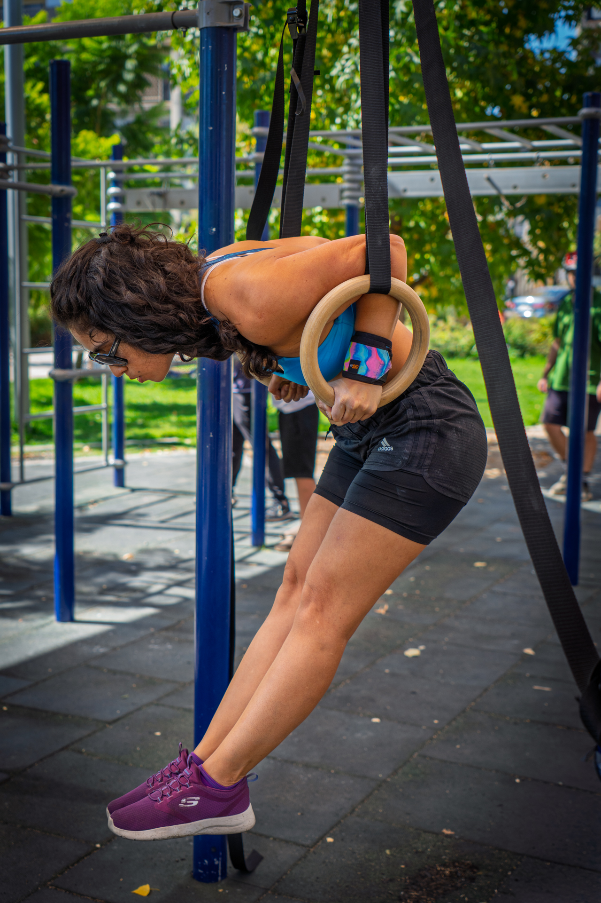
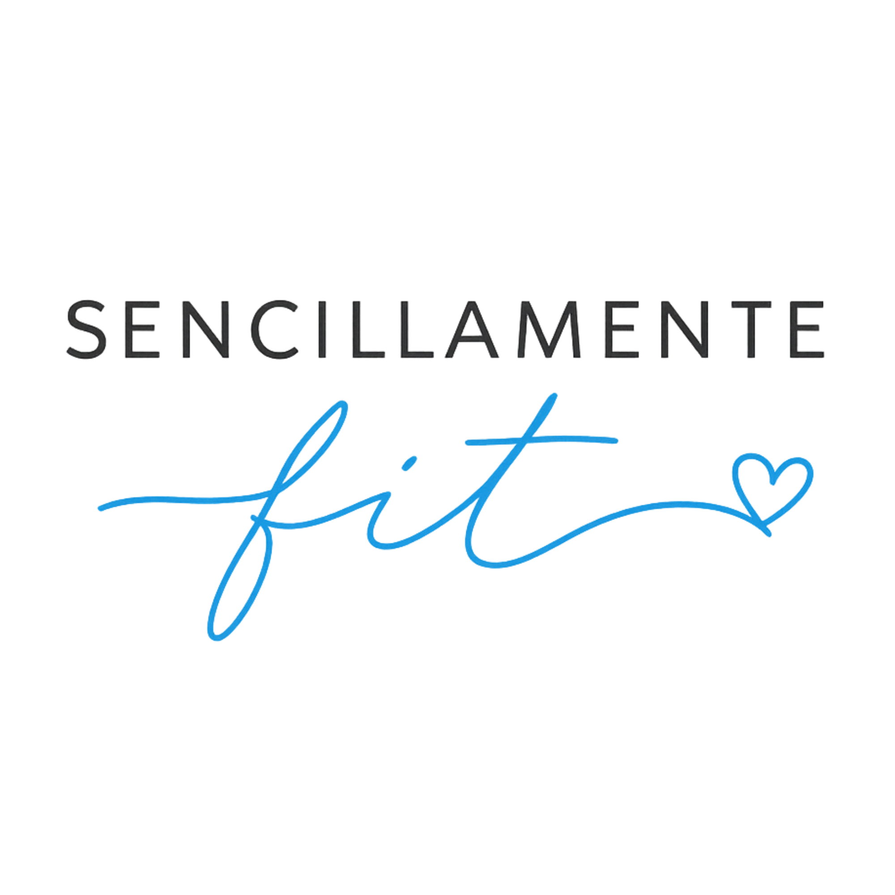

Comer rico, entrenar fuerte y vivir sin gluten también puede ser sencillo.
Recetas fit, beneficios gluten free, lugares recomendados y todo lo que necesitas para una vida activa, rica y en equilibrio.
🎁 Ver beneficios 🍴 Explorar recetasDescuentos, códigos y beneficios para la comunidad gluten free.
Recetas dulces, saladas y preparaciones altas en proteína.
Ideas para disfrutar sin perder el equilibrio.
Mi experiencia, progresos y consejos para entrenar.
Soy celíaca, amante de la calistenia y creadora de contenido sobre alimentación saludable.
A través de Sencillamente Fit comparto recetas, beneficios, lugares recomendados y experiencias para demostrar que una vida gluten free puede ser rica, activa y entretenida.